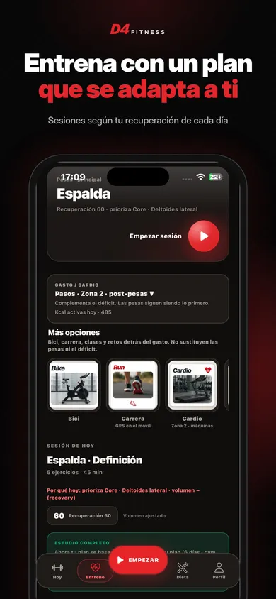
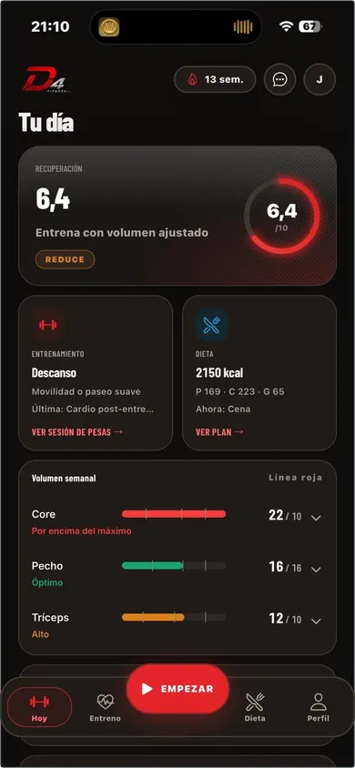
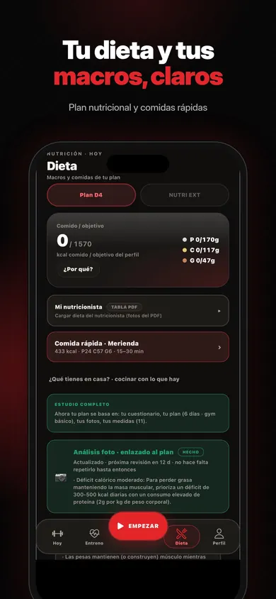
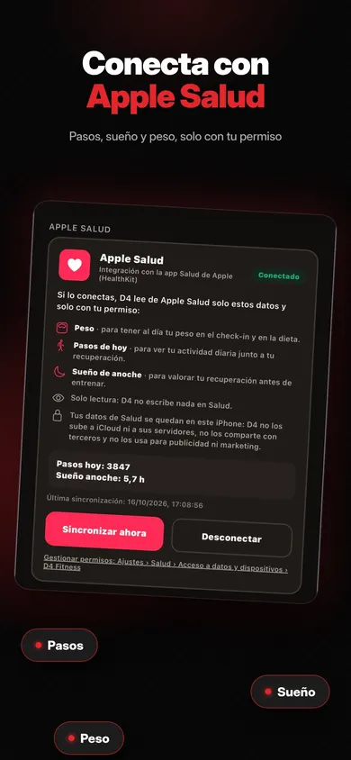
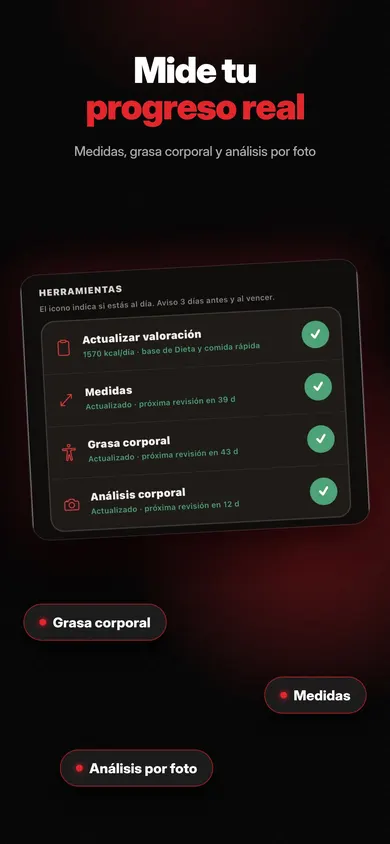
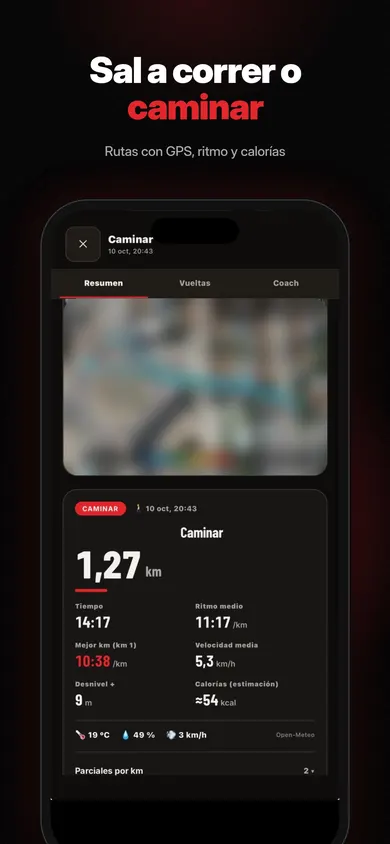
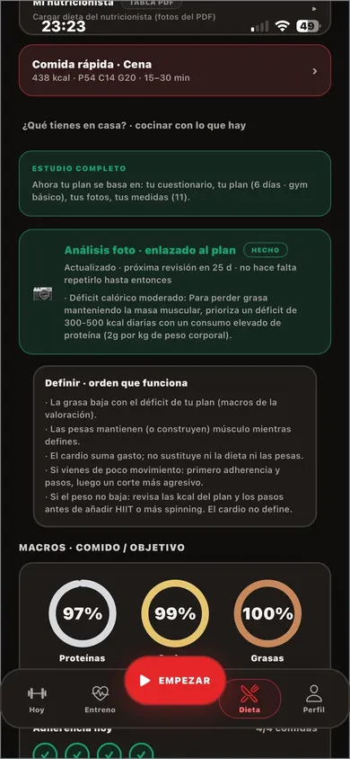
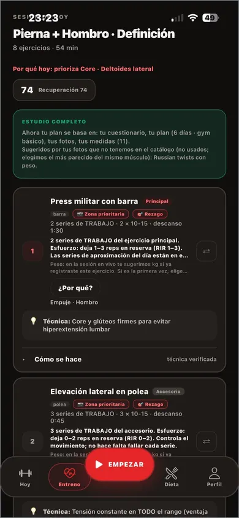

Entrena · Nútrete · Recupérate
Gana músculo con el volumen justo para ti.
D4 calcula tus series semanales por músculo entre tu mínimo efectivo (MEV) y tu máximo adaptativo (MAV), y ajusta tu nutrición y tu recuperación cada día.
Un mes de Premium gratis al suscribirte. Después, 9,99 €/mes o 59,99 €/año.

Ciencia · Disciplina · ResultadosiPhone · En español
El método
Ni de menos, ni de más: MEV-MAV
Crecer depende de hacer suficiente volumen sin pasarte de lo que puedes recuperar. D4 lo lleva músculo a músculo.
- Mínimo efectivo (MEV)Las series semanales a partir de las que un músculo empieza a crecer.
- Máximo adaptativo (MAV)El techo útil: por encima, más series suman fatiga y no progreso.
- Ajuste diarioTu recuperación del día ajusta la sesión, la dieta y el descanso.

Privacidad
Tu entreno es tuyo
- Cero anuncios. Ni banners ni vídeos entre series.
- Cero rastreo. La app no usa rastreo publicitario.
- IA opcional, con Gemini. Solo se usa si tú la activas.
- Apple Salud, solo lectura. Peso, pasos y sueño, con tu permiso.
La app
Así es D4 por dentro
Volumen por músculo
Volumen por músculo: sabes cuándo te pasas.
Tu dieta y tus macros, claros
Calorías y macros calculados para tu objetivo.

Conecta con Apple Salud
Pasos, sueño y peso, solo si das permiso.

Todas las pantallas
Entrena con un plan que se adapta a ti. Tu sesión cambia con tu recuperación del día. Tu dieta y tus macros, claros. Calorías y macros calculados para tu objetivo. 
Mide tu progreso real. Medidas y grasa corporal, con fechas de revisión. Conecta con Apple Salud. Pasos, sueño y peso, solo si das permiso. 
Sal a correr o caminar. Cardio con GPS; la ruta se queda en tu iPhone. Volumen por músculo. Volumen por músculo: sabes cuándo te pasas. 
Tu día de dieta. Tu día de dieta, cumplido de un vistazo. 
Cada serie, medida. Cada serie con su peso, repeticiones y RIR.
Precios
Gratis o Premium
Gratis
0 €
Descarga la app y empieza sin pagar.
Premium mensual
9,99 € /mes
Primer mes gratis al suscribirte.
Premium anual
59,99 € /año
Equivale a 5,00 €/mes: ahorras un 50 %. Primer mes gratis al suscribirte.
El cobro se hace en tu cuenta de Apple. Renovación automática salvo que canceles al menos 24 h antes del final del periodo.
Dudas
Preguntas frecuentes
¿Cómo funciona la renovación de Premium?
Tras el mes gratis se cobra 9,99 €/mes o 59,99 €/año a tu cuenta de Apple. La suscripción se renueva sola salvo que la canceles al menos 24 h antes del final del periodo, desde Ajustes de tu cuenta de Apple.
¿Está disponible para Android?
No. Por ahora D4 FITNESS es solo para iPhone, con iOS 16.4 o posterior, y se descarga desde el App Store.
¿En qué idioma está la app?
Solo en español.
¿Qué hacéis con mis datos?
D4 no muestra anuncios ni usa rastreo. Si conectas Apple Salud, la app solo lee peso, pasos y sueño, y no escribe nada en Salud. Lo tienes todo en la política de privacidad. Leer la política de privacidad.
¿Tengo que usar la IA?
No. Las funciones de IA, con Gemini, son opcionales; puedes entrenar y llevar tu dieta sin activarlas.
Tu mejor versión, cada día.
Un mes de Premium gratis al suscribirte.